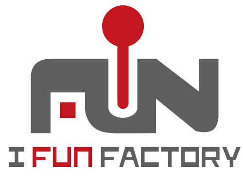

Toggle navigation
About
About PyCon Korea 2015
Code of Conduct
Announcements
Sponsors
Staff
Contact
Programs
Call for proposals
Schedule
Program list
Speakers
Open Spaces
Getting Here
Venue Map
Transportation
Hotels
Restaurants
Registration
Language
한국어
English
日本語
Speakers
Titles and descriptions may vary.
이희승 / trustin
Twitter
Github
Linkedin
네티 13년
정민영 / kkung
Tumblr
Twitter
Github
Facebook
Linkedin
Celery의 빛과 그림자
김준기 / achimnol
Twitter
Github
Facebook
Designing a Python-based Data Analysis / Online Coding Platform for Researchers and Educators
오영택 / youngtaek
유연한 모바일 게임 운영을 위한 Git 기반 패치 시스템
최규민 / goodvc78
Blog
Slideshare
Facebook
Linkedin
추천시스템이 word2vec을 만났을때
김재석 / jc
Github
도도와 파이썬: 좋은 선택과 나쁜 선택
서상현 / sanxiyn
Twitter
Github
Facebook
파이썬: 내다보기
임덕규 / hong18s
Github
Linkedin
업무에서 빠르게 만들어 사용하는 PyQt 프로그래밍
유재명 / aichupanda
Blog
Twitter
Github
R vs. Python: 누가, 언제, 왜
Pay-thon: 2015 파이썬 사용자 조사 결과 분석
정윤원 / youknowone
Twitter
Github
PyPy/RPython으로 20배 빨라지는 JIT 아희 인터프리터
하재승 / ipkn
Twitter
Github
파이썬을 이용한 새 프로그래밍 언어 "약속"의 개발
배준현 / devunt
Blog
Github
파이썬 메모리 이모저모
장혜식 / perky
Twitter
Github
Facebook
탐색적으로 큰 데이터 분석하기: 파이프라인, 병렬화, 압축, 인덱싱 등에 대해
김기환 / wbkifun
Python의 계산성능 향상을 위해 Fortran, C, CUDA-C, OpenCL-C 와 연동하기
신정규 / inureyes
Web
Twitter
Github
Facebook
Designing a Python-based Data Analysis / Online Coding Platform for Researchers and Educators
김현호 / hyunho
Github
오늘 당장 딥러닝 실험하기
이호성 / hosung
Github
Facebook
Linkedin
Python 테스트 시작하기
하용호 / yongho
Facebook
R이 판치는 세상에 Python 데이터 분석가로 사는 법
박중석 / jspark
Blog
Twitter
Python on Azure
김도형 / dohhyoung
Twitter
Linkedin
파이썬 기반의 대규모 알고리즘 트레이딩 시스템 소개
이창욱 / clee11
Twitter
Github
Introduction to Kivy
Daesung Kang / daesung
Linkedin
Character Encoding in Python
Eric Ahn / eric
Twitter
Github
Facebook
Docker를 이용하여 Python 개발 환경을 빠르게 구성하고, 백앤드 서비스를 탐색하는 기술
Heungsub Lee / sublee
Github
Profiling - 실시간 대화식 프로파일러
HyungKwan Kim / hiraikaen
Facebook
Linkedin
Simulation on Optical Image Stabilizer using Python
Hyun-woo Park / lqez
Blog
Twitter
Github
Soundcloud
Linkedin
Django In Production
Ian Lewis / ian
Twitter
Github
Google-plus
Building a Scalable Python gRPC Service using Kubernetes
Kwon-Han Bae / darjeeling
Twitter
Github
Functional Testing
Opening
Kyunghoon Kim / kyunghoon
Linkedin
NetworkX를 이용한 네트워크 링크 예측
Lucy Park / lucypark
Twitter
Github
한국어와 NLTK, Gensim의 만남
Myung Shin Kim / myungkim
Blog
Twitter
Facebook
Python 개발을 위한 최상의 무료 개발 도구 Visual Studio와 Visual Studio Code
Robert Jerovsek / robert
Github
Linkedin
Load testing
Takayuki Shimizukawa / shimizukawa
Bitbucket
Github
Google-plus
Twitter
Linkedin
Blog
Facebook
Flickr
Sphinx autodoc: automated API documentation
Younggun Kim / scari
Github
Twitter
Youtube
Linkedin
Blog
Facebook
Opening
Writing fast code
Sponsor list
Diamond
Platinum
Venue
Financial Aid Sponsor
Gold

Silver
Media